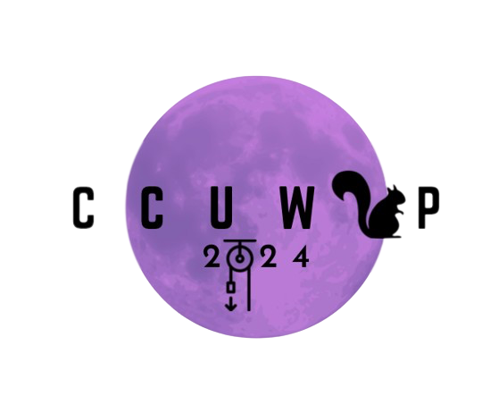
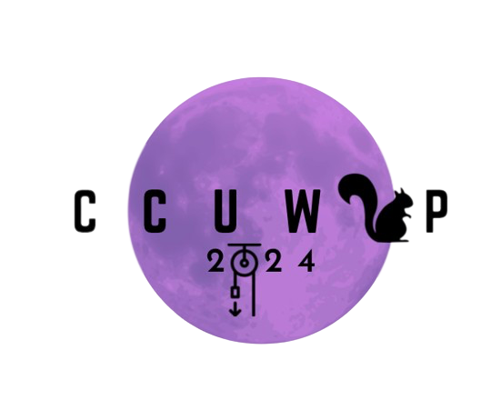

Events
EDI Colloquia
Friday, February 23, 2024, 3:30 pm EST
Designing for Social Justice in Science Teaching and Learning: Working towards Rightful Presence
Angela Calabrese Barton, Chair, Educational Studies; Professor, Marsal Family School of Education, University of Michigan
APIERY (Astronomy/Physics: Inclusion, Engagement, Reimagining, pedagogY) Discussion is a weekly discussion group facilitated by the TSI Program Administrator. APIERY is meant to be a space where we further our knowledge about science engagement, education, and pedagogy, to make our astronomy and physics spaces and practice more inclusive. The discussion is targeted at members of TSI and Physics at all levels (undergraduate students, graduate students, postdoctoral fellows, and faculty), but we welcome participants from other departments as well. Participants are encouraged to suggest topics and to lead the discussion if they so choose! Discussions are based on a range of source material such as academic papers, videos, and podcasts, but the source is meant to be a way of framing the conversation about a broader issue. We also run APIERY hack sessions, where we tackle a specific project related to a topic we have previously discussed. APIERY is the successor to EPOD Discussion, MSI's EPO/EDI discussion group which ran from 2015 to 2022. APIERY is held on Wednesday afternoons from 2-3 PM in the TSI lounge (3550 Rue University), all are welcome! If you have any questions, please contact carolina.cruzvinaccia at mcgill.ca.
More information here.
EDI Social
The McGill physics EDI committee would like to invite you to a night of games, activities, and colouring! Come meet some of the committee members, learn about who we are and de-stress with our games and activities! Food and beverages will be provided.
Register here.
Designing for Social Justice in Science Teaching and Learning: Working towards Rightful Presence
Angela Calabrese Barton, Chair, Educational Studies; Professor, Marsal Family School of Education, University of Michigan
APIERY Discussions
Winter 2022: every Wednesday, 2:00 pm ESTAPIERY (Astronomy/Physics: Inclusion, Engagement, Reimagining, pedagogY) Discussion is a weekly discussion group facilitated by the TSI Program Administrator. APIERY is meant to be a space where we further our knowledge about science engagement, education, and pedagogy, to make our astronomy and physics spaces and practice more inclusive. The discussion is targeted at members of TSI and Physics at all levels (undergraduate students, graduate students, postdoctoral fellows, and faculty), but we welcome participants from other departments as well. Participants are encouraged to suggest topics and to lead the discussion if they so choose! Discussions are based on a range of source material such as academic papers, videos, and podcasts, but the source is meant to be a way of framing the conversation about a broader issue. We also run APIERY hack sessions, where we tackle a specific project related to a topic we have previously discussed. APIERY is the successor to EPOD Discussion, MSI's EPO/EDI discussion group which ran from 2015 to 2022. APIERY is held on Wednesday afternoons from 2-3 PM in the TSI lounge (3550 Rue University), all are welcome! If you have any questions, please contact carolina.cruzvinaccia at mcgill.ca.
More information here.
Social Events
Wednesday, November 8th, 2023 at 6 PM ESTEDI Social
The McGill physics EDI committee would like to invite you to a night of games, activities, and colouring! Come meet some of the committee members, learn about who we are and de-stress with our games and activities! Food and beverages will be provided.
Register here.
EDI-Related Opportunities
CCUWiP 2024
CCUWIP is an undergraduate conference that provides a safe space for underrepresented groups in physics to present their research and learn from leading physicists. CCUWiP 2024 is hosted by McGill and University of Montreal.
CCUWiP website: registration, and volunteer information 
CCUWIP is an undergraduate conference that provides a safe space for underrepresented groups in physics to present their research and learn from leading physicists. CCUWiP 2024 is hosted by McGill and University of Montreal.
CCUWiP website: registration, and volunteer information 
EDI-related Events at McGill
- List of upcoming EDI events from SECC
- Equity at McGill: Workshops for Faculty
- Equity at McGill: Workshops for Staff
- Our Shared Spaces: Equity programming available to all McGill students